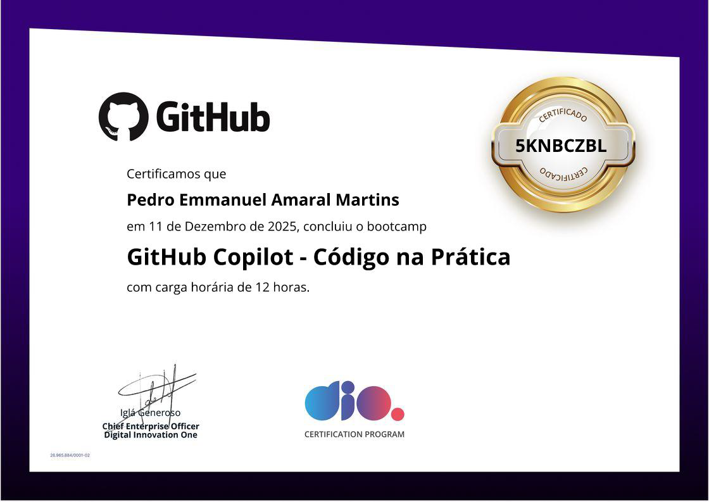
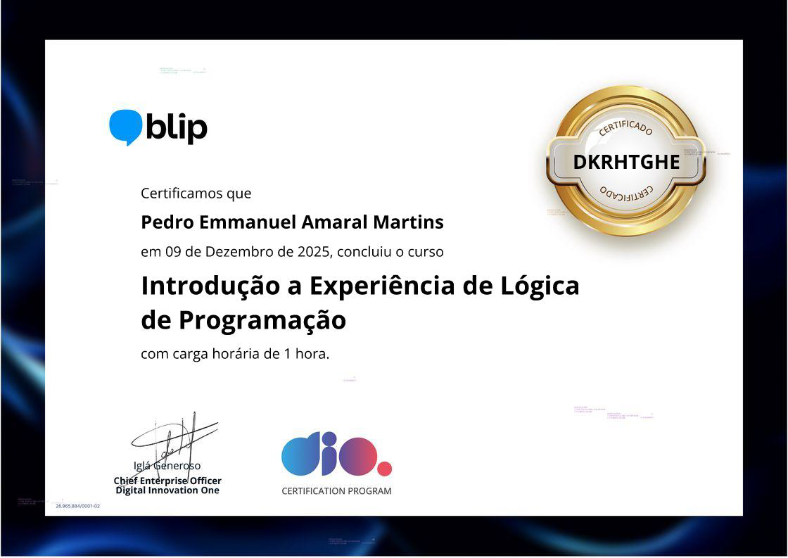
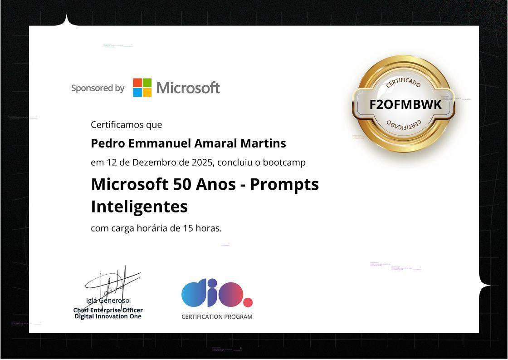
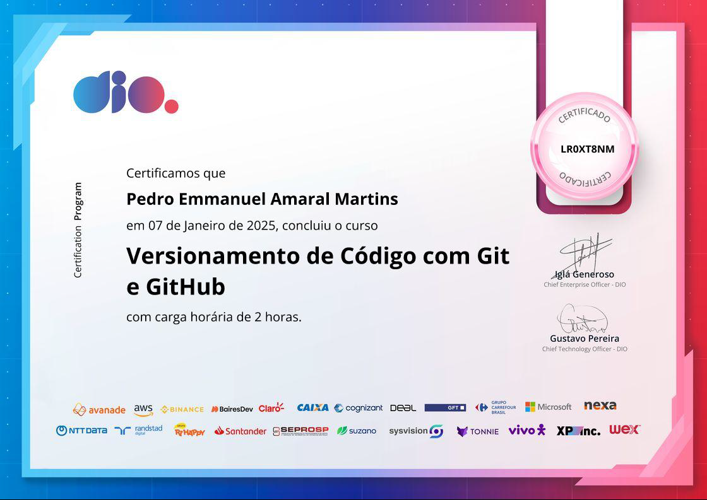

GitHub Copilot - Código na Prática (DIO)
Certificação prática em GitHub Copilot, focada em geração e assistência de código com IA.

Certificação prática em GitHub Copilot, focada em geração e assistência de código com IA.
Certificado de conclusão do GFT Start #6, com foco em Lógica de Programação e resolução de problemas.
Certificação que comprova domínio em Git e uso avançado do GitHub em projetos colaborativos.

Curso focado em raciocínio lógico, estruturas de controle, loops e resolução de problemas com JavaScript.
Bootcamp com foco em aplicações práticas de IA, automação e uso de APIs inteligentes.
Atividades complementares, extensão e cursos concluídos na instituição.

Certificado de capacitação em Power BI, com foco em análise e visualização de dados para criação de relatórios interativos.(SENAI)
Certificação em serviços de nuvem pelo Google, abordando implantação e gerenciamento de soluções na plataforma Google Cloud.(SENAI)
Certificação AWS Cloud Practitioner, com fundamentos de computação em nuvem, serviços AWS e arquitetura básica de soluções(SENAI)p>

Certificado da Microsoft focado em criação de prompts inteligentes e uso eficaz de IA para geração de conteúdo.

Certificação em versionamento de código usando Git e GitHub, abordando commits, branches e colaboração eficiente.